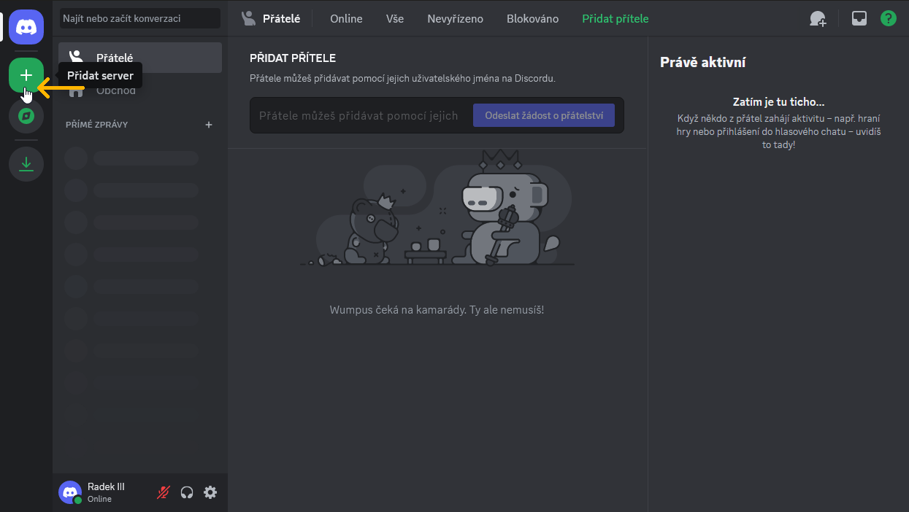
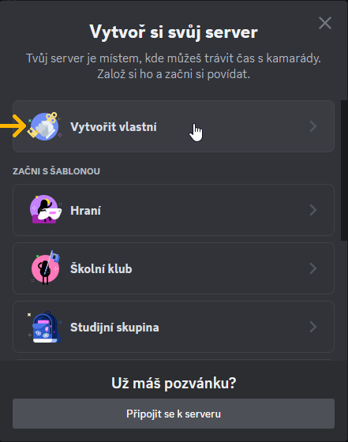
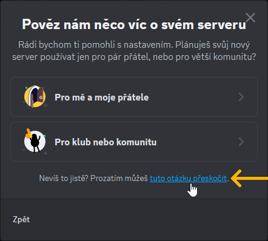
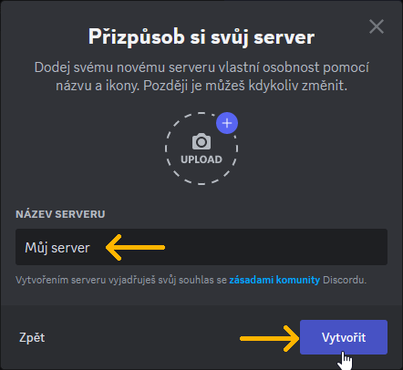
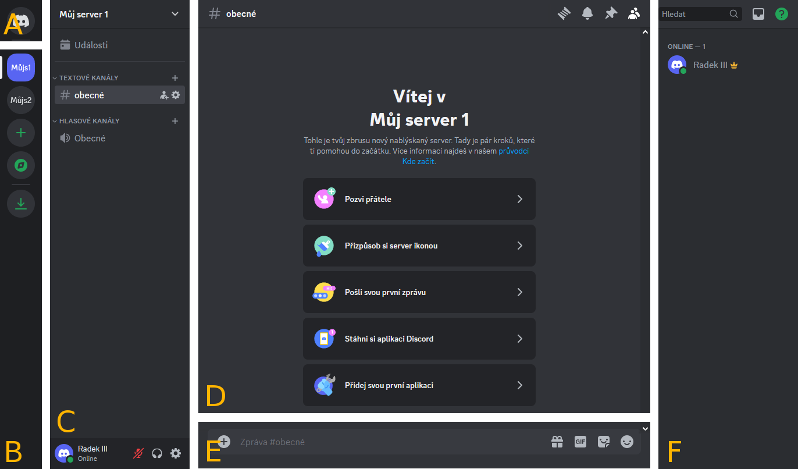

Vytvoření serveru a jeho uživatelské rozhraní
Jak si vytvořit vlastní Discord server
1. Klikněte na tlačítko Přidat server.

2. Proklikejte se průvodcem vytvoření serveru:
2A. Klikněte na tlačítko Vytvořit vlastní.

2B. Klikněte na tuto otázku přeskočit.

2C. V kolonce NÁZEV SERVERU můžete změnit název svého serveru. Potvrďte kliknutím na tlačítko Vytvořit.

3. Server byl vytvořen. Klikněte na tlačítko Zobrazit seznam členů.

Uživatelské rozhraní serveru
Uživatelské rozhraní Discordu při prohlížení serveru lze rozdělit na 6 hlavních částí. Části jsou v obrázku označeny písmeny A až F:

A – tlačítko pro přepnutí do DMs
B – seznam všech serverů
C – seznam všech dostupných kanálů na vybraném serveru
D – obsah vybraného kanálu
E – kolonka pro odesílání zpráv do vybraného kanálu
F – seznam všech členů a botů s přístupem do vybraného kanálu
Kolonka pro psaní zpráv slouží také pro psaní příkazů, na které reagují boti. Zprávy a příkazy je nutné odesílat klávesou Enter.